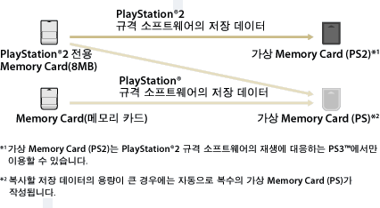

게임 > PlayStation®2 / PlayStation® 규격 소프트웨어 즐기기 > Memory Card의 저장 데이터 사용하기
Memory Card의 저장 데이터 사용하기
PlayStation®2 전용 Memory Card(메모리 카드)(8MB) 또는 Memory Card(메모리 카드)의 저장 데이터를 사용하여 게임을 플레이할 때에는 데이터를 하드 디스크 내의 가상 Memory Card에 복사해야 합니다. 복사하려면 별매의 Memory Card(메모리 카드) 어댑터가 필요합니다.
중요
- PS3™에서 일부 PlayStation®2 또는 PlayStation® 규격 소프트웨어가 종래의 PlayStation®2 또는 PlayStation®에서와 다르게 동작하거나 적절히 동작하지 않는 경우가 있습니다.
- 또한 일부의 PS3™는 PlayStation®2 규격 소프트웨어의 재생에 대응하지 않습니다. 상세한 사항은 [재생할 수 있는 디스크의 종류에 대하여], 각 지역 웹 사이트 또는 제품에 동봉된 사용설명서를 참조해 주십시오.
1. |
|
|---|---|
2. |
Memory Card(메모리 카드) 어댑터를 PS3™에 연결하고 Memory Card를 넣습니다. |
3. |
표시된 Memory Card에서 복사할 저장 데이터의 아이콘을 선택한 후 |
4. |
[복사]를 선택합니다. |
5. |
슬롯을 할당합니다. |
 (게임) 에서
(게임) 에서  (Memory Card 유틸리티 (PS/PS2))를 선택합니다.
(Memory Card 유틸리티 (PS/PS2))를 선택합니다. (Memory Card (PS)) 또는
(Memory Card (PS)) 또는  (Memory Card (PS2)) 아이콘이 표시됩니다.
(Memory Card (PS2)) 아이콘이 표시됩니다. (신규 가상 Memory Card 작성)을 선택한 후 화면의 지시에 따라 가상 Memory Card를 만들어 주십시오.
(신규 가상 Memory Card 작성)을 선택한 후 화면의 지시에 따라 가상 Memory Card를 만들어 주십시오.알아두기
- PlayStation®2 전용 Memory Card(메모리 카드)(8MB) 또는 Memory Card(메모리 카드)의 저장 데이터는 데이터 형식에 따라 아래와 같이 가상 Memory Card에 복사됩니다.
- 저장 데이터에 따라서는 복사에 수십 초에서 수 분이 걸리는 경우가 있습니다.
- PlayStation®2 전용 Memory Card(메모리 카드)(8MB) 또는 Memory Card에 저장되어 있는 모든 저장 데이터를 복사하려면 3단계에서 Memory Card를 선택하고
 버튼을 누른 후 옵션 메뉴에서 [복사]를 선택합니다.
버튼을 누른 후 옵션 메뉴에서 [복사]를 선택합니다. - 저장 데이터에 따라서는 복사가 금지되어 있는 것이 있습니다. 이러한 데이터를 PS3™에서 사용할 경우 4단계에서 [이동]을 선택합니다. 저장 데이터가 하드 디스크로 이동되고 Memory Card에서 삭제됩니다.
- 이동한 저장 데이터를 다시 Memory Card로 되돌릴 수도 있습니다.

저장 데이터를 Memory Card에 복사하기
하드 디스크에 저장된 PlayStation®2/PlayStation® 규격 소프트웨어의 저장 데이터를 Memory Card / PlayStation®2 전용 Memory Card(메모리 카드)(8MB)에 복사할 수 있습니다. 복사하려면 별매의 Memory Card(메모리 카드) 어댑터가 필요합니다.
1. |
|
|---|---|
2. |
Memory Card(메모리 카드) 어댑터를 PS3™에 연결하고 Memory Card를 넣습니다. |
3. |
데이터가 저장되어 있는 |
4. |
[복사]를 선택합니다. |
 (가상 Memory Card (PS)) 또는
(가상 Memory Card (PS)) 또는  (가상 Memory Card (PS2))에서 복사할 저장 데이터의 아이콘을 선택한 후
(가상 Memory Card (PS2))에서 복사할 저장 데이터의 아이콘을 선택한 후 알아두기
- 가상 Memory Card의 여러 저장 데이터 항목을 Memory Card에 일괄적으로 복사할 수는 없습니다.
- 저장 데이터에 따라서는 복사가 금지되어 있는 것이 있습니다. 이러한 데이터를 사용할 경우 4단계에서 [이동]을 선택하면 저장 데이터가 하드 디스크로 이동되고 Memory Card에서 삭제됩니다.
- 이동한 저장 데이터를 다시 하드 디스크에 되돌릴 수도 있습니다.